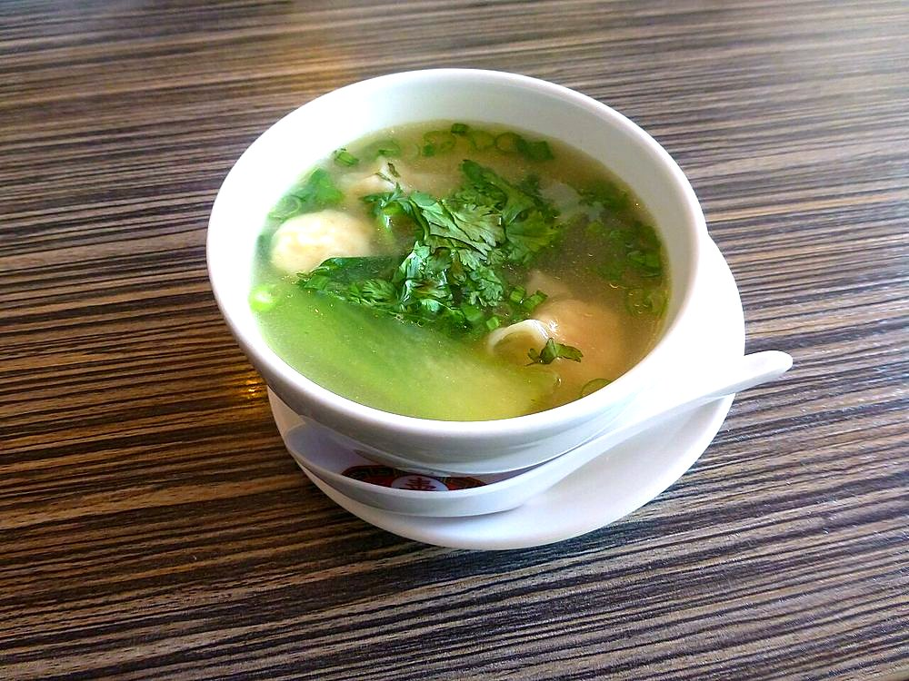

Contains: gluten, egg, soy
Ingredients
Quantities for 4.
- 200g Maida
- 1 Eggs
- 250g minced Chickenor finely chopped mushroom and cabbage for a vegetarian version
- 5, chopped Spring Onion
- 1 tbsp, grated Ginger
- 1 tbsp, chopped Garlic
- 2 tbsp Soy Sauce
- 1.5 tsp Black Pepper
- 1.5 litres Water
- 1 tbsp Neutral Oil
- a handful Coriander Leavesoptional
- to taste Salt
Cookware
stovetop
Checked against the ingredient list for ten allergens: milk, egg, fish, crustaceans, tree nuts, peanuts, sesame, mustard, soy and gluten. Brands vary, so read the label on anything new to you.
Before you start
- The broth should be clear and taste of pepper and ginger. Cloudy broth means it boiled hard; keep it at a bare simmer.
- Wrappers must be rolled genuinely thin. You should almost see the filling through them.
Method
- Make a firm dough with the flour, egg and a little water. Rest 30 minutes, roll very thin and cut 8cm squares.
- Mix the mince with half the spring onion, the ginger, 1 tbsp soy sauce, half the pepper and salt.
- Place a small spoonful on each square, wet the edges and pinch closed into a pouch.Small. An overfilled wonton splits in the water.
- Bring the water to a bare simmer with the garlic, remaining soy sauce, pepper and oil. Season.
- Slide the wontons in and poach 6 minutes until they float and the wrappers turn translucent.A simmer, never a boil. A rolling boil tears them open.
- Ladle into bowls with the broth and finish with spring onion and coriander.
Safe temperatures: Chicken and duck are done at 74°C / 165°F, taken at the thickest part and clear of the bone. Egg dishes are done at 71°C / 160°F; a whole egg when the yolk and white are both firm. Reheat leftovers to 74°C / 165°F. FoodSafety.gov
Storage
The broth keeps 3 days refrigerated. Cook wontons fresh; poached ones swell and go pasty. Uncooked wontons freeze well for a month.
Nutrition Medium estimate
High protein: 21 g a serving, 26% of the calories
| Per serving444 g | Per 100 g | |
|---|---|---|
| Calories | 326 kcal | 74 kcal |
| Protein | 21.4 g | 5 g |
| Carbohydrate | 43.1 g | 10 g |
| of which sugars | 0.8 g | 0 g |
| Fibre | 2.5 g | 1 g |
| Fat | 7.1 g | 2 g |
| of which saturated | 1.3 g | 0 g |
| of which unsaturated | 4.9 g | 1 g |
Ingredients given to taste count as zero, so the real figures run a little higher. Estimated from raw ingredients using USDA FoodData Central.
More like this: Dairy-free Indian recipes · Indian soup recipes · Indo-Chinese recipes
Times, yields, allergens and nutrition are guidance. Use your own judgement on doneness and on storing. More in About.